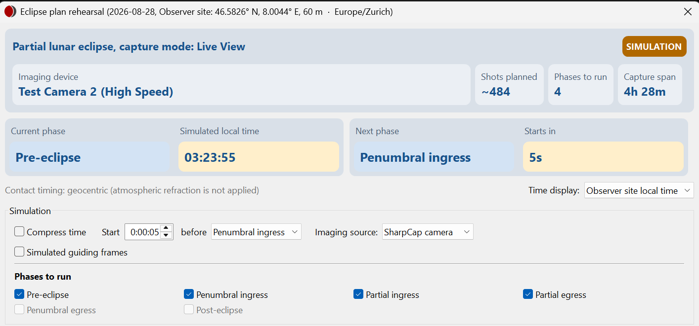
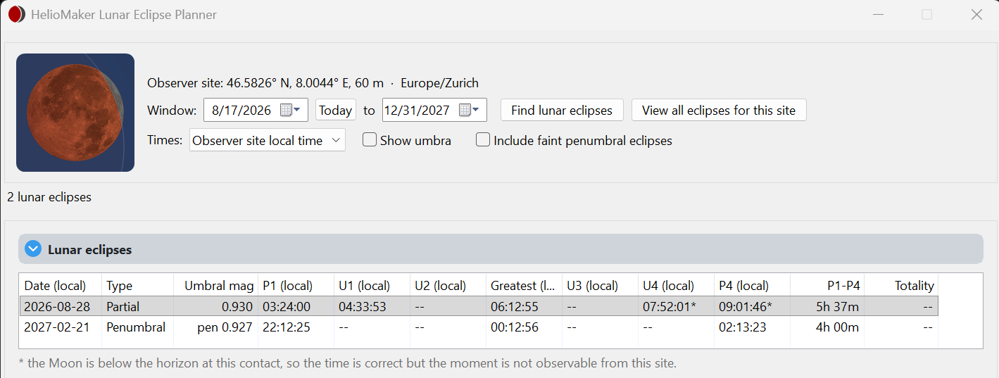

Simulation options
Practise the sequence with a simulated eclipse clock and choose which parts of the rig to exercise.
Open a rehearsal
Select an event and click Eclipse plan rehearsal.... Review the plan version. You can rehearse a draft before approving it for live capture.
| Imaging source | What happens |
|---|---|
| Eclipse simulator | Renders lunar images and writes them without a physical SharpCap camera. Useful for reviewing the sequence and output structure. |
| SharpCap camera | Uses a simulated eclipse clock with the real imaging camera. Camera operations and image files are real. |
| None (timing only) | Exercises timing without writing science image files. |

The Eclipse simulator times each set with the camera's overhead for the selected capture mode, Still or Live, as the System benchmark measured it, or a conservative estimate before the benchmark is run, so set durations follow those the planner shows. A rehearsal is refused, as a live start is, while another eclipse run or a capture sequence, an SHG scan or a PHD2 calibration uses the rig.
Choose time and phases
Set the lead as hours:minutes:seconds before the selected starting phase. Choose the phases to run and use Compress time for a quicker walkthrough. Rehearse with realistic timing when judging long exposures, camera overhead and guiding opportunities.
The planner’s visual preview is useful for inspecting geometry. Use an actual rehearsal to exercise scheduling and output. Uncheck Show umbra for the view with the Moon held still.

Simulated guiding frames
With shared-camera guiding enabled, the rehearsal can offer Simulated guiding frames. This feeds rendered lunar frames to PHD2 to exercise lunar-disk detection without the sky. It is independent of the science imaging source. PHD2 must be linked to test this path.
In the console, Ctrl+click Freeze pauses the simulation clock; Ctrl+click Unfreeze resumes it. This control is absent from a live eclipse run. After rehearsing, review generated images and the final summary.